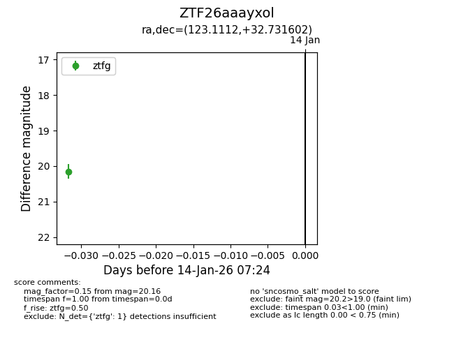
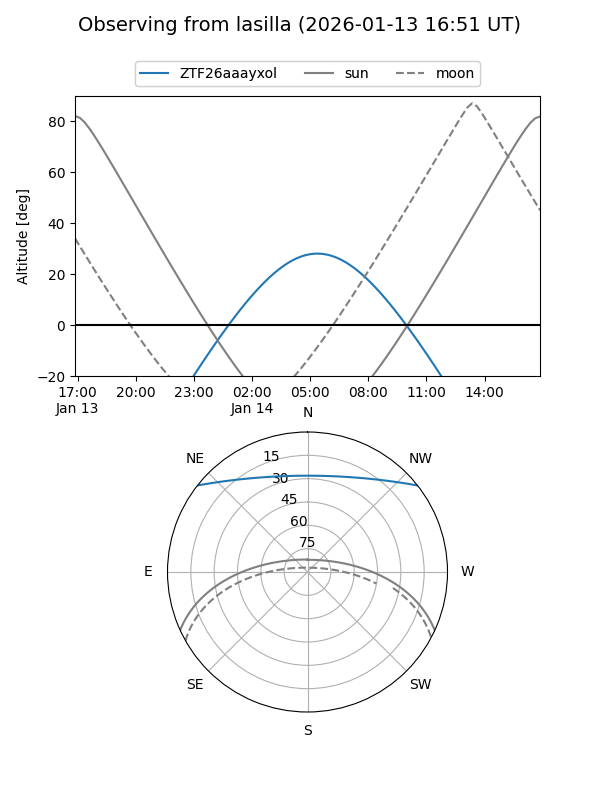
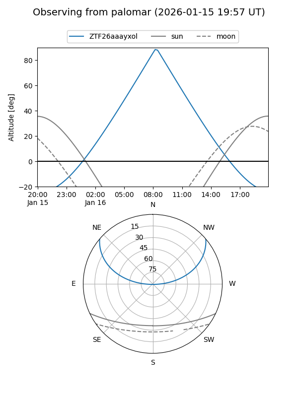

ZTF26aaayxol
Target ZTF26aaayxol at 2026-01-16 07:25
Aliases and brokers:
FINK: link
Lasair: link
ALeRCE: link
alt names
ZTF26aaayxol (ztf,fink_ztf)
Coordinates:
equatorial (ra, dec) = 123.1112,+32.73160
equatorial (HMS+DMS) = 08:12:26.68,+32:43:53.77
galactic (l, b) = (189.1098,+30.37785)
Flags:
Photometry:
last ztfg=20.16
1 ztfg detections
Lightcurve

Visibility


Additional plots